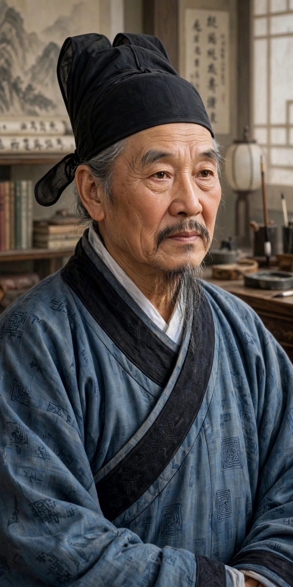

Zhu Xi

Born: 18 October 1130, Youxi, Fujian
Died: 23 April 1200
School: Neo-Confucianism (Cheng–Zhu school)
Known for: synthesis of Neo-Confucianism; commentaries on the Four Books
Zhu Xi (18 October 1130 – 23 April 1200) was a Chinese calligrapher, historian, philosopher, poet and politician of the Song dynasty. The great synthesizer of Neo-Confucianism, his commentaries on the Four Books became the standard interpretation required by the imperial civil service examinations for more than six hundred years, making him one of the most influential thinkers in Chinese history.
Life
A child prodigy, Zhu passed the jinshi examination at eighteen. He held only a few official posts, spending most of his career teaching, writing and organising academies — notably restoring the White Deer Grotto Academy. His teachings were briefly banned as "false learning" in the 1190s, but he was posthumously rehabilitated and enshrined in the Confucian temple in 1228.
Thought
Zhu taught that all things embody li (principle) and qi (material force); human nature is principle, but is obscured by turbid qi. Moral cultivation proceeds through the "investigation of things" — studying texts and the world to exhaustively grasp principle — combined with reverent attentiveness. His commentaries fixed the Four Books (Great Learning, Doctrine of the Mean, Analects, Mencius) as the heart of the curriculum, displacing the Five Classics. His Family Rituals shaped ceremonies of marriage and mourning across East Asia for centuries.
Legacy
From 1313 until 1905, examination candidates were judged by Zhu's interpretations. His influence extended to Korea and Japan, and his works were among the first Chinese philosophy translated and discussed in Enlightenment Europe. The "Goose Lake debate" with Lu Jiuyuan defined the great fork between the Cheng–Zhu and Lu–Wang schools.
See also: Neo-Confucianism · History of China